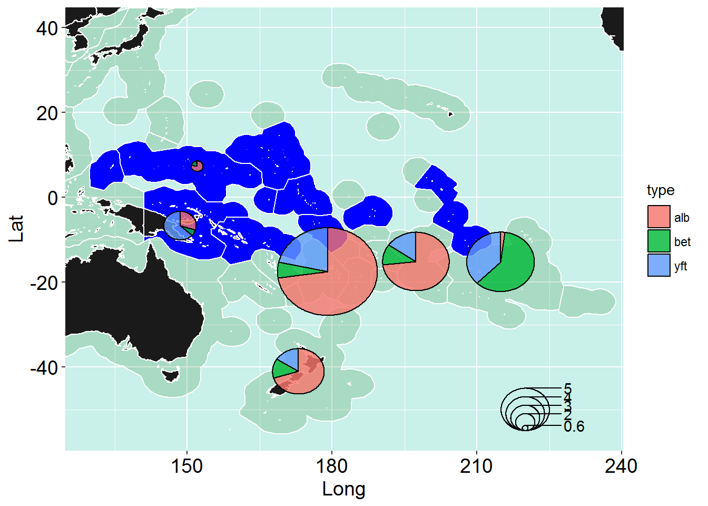

ggplot is a useful way to create maps and add layers to the map.
In this example we will create a map, highlight the PNA Member EEZs and then overlay the regions of the South Pacific albacore assessment.
Load all the requited packages.
> library(survival)
> library(maps)
> library(maptools)
> library(mapdata)
> library(ggplot2)
> library(plyr)
> library(grid)
> library(scatterpie)Load all the mapping data you will need eg. the EEZs you want and the data to be plotted.
> all_states <- map_data("world2Hires") # if you want to go above 180 use world2Hires else worldHires
>
> #eez overlay
> eez <- read.table("EZNEW2.txt", sep=" ", header=F, skip=0) #All regions
> eez_pna <- read.csv("pna_eez.csv") #PNA regions
>
> point_data<-read.csv("point_dat.csv") # the data for the pointsDefine the colours for the background and then load all the states (countries) you want to appear in the plot.
> #different made up colours for the sea
> grecol <- rgb(red=0,green=100, blue=0, alpha=40, maxColorValue=255) #green colour
> blucol <- rgb(red=60,green=200, blue=175, alpha=70, maxColorValue=255)
>
> #sort(unique(all_states$region)) # to list the states you will need this if you want to add countries to your map
>
> # All states for the map.
> states <- subset(all_states, region %in%
+ c("American Samoa", "Australia", "Canada","China","Cook Islands","Fiji", "French Polynesia",
+ "Guam", "Hawaii", "Indonesia","Japan","Kiribati", "Marshall Islands", "Mexico", "Micronesia",
+ "Nauru", "New Caledonia", "New Zealand", "South Korea","North Korea" , "Niue",
+ "Northern Mariana Islands","Palau",
+ "Papua New Guinea", "Philippines", "Samoa", "Solomon Islands","Tokelau", "Tonga", "Tuvalu",
+ "USA", "USSR", "Vanuatu","Panama","Mongolia" , "Chile","Argentina", "New Caledonia","Belize",
+ "Nicaragua","Ecuador","Honduras","Costa Rica","Colombia", "Uruguay", "Brazil",
+ "Peru", "Guatemala","Venezuela","Bolivia","Paraguay" ))Load the co-ordinates for the regional boundaries and make the labels.
> # add the region co-ordinates for the SP albacore assessment
> b.x_1 <- c(140,140,170,170,140)
> b.y_1 <- c(-10, 0, 0,-10,-10)
> b.x_2<- c(140,140,170,170,140)
> b.y_2<- c(-25,-10,-10,-25,-25)
> b.x_3<- c(140,140,170,170,140)
> b.y_3<- c(-50,-25,-25,-50,-50)
> b.x_4<- c(170,170,210,210,170)
> b.y_4<- c(-10, 0, 0,-10, -10)
> b.x_5<- c(170,170,210,210,170)
> b.y_5<- c(-25,-10,-10,-25,-25)
> b.x_6<- c(170,170,210,210,170)
> b.y_6<- c(-50,-25,-25,-50,-50)
> b.x_7<- c(210,210,230,230,210)
> b.y_7<- c(-25, -5, -5,-25,-25)
> b.x_8<- c(210,210,230,230,210)
> b.y_8<- c(-50,-25,-25,-50,-50)
>
> # region labels
> reg_lab<-c("1","2","3","4","5","6","7","8") # labels
> reg_labx<-c(155,155,155,190,190,190,220,220) # x axis co-ordinates
> reg_laby<-c( -5,-18,-35, -5,-18,-35,-15,-35) # y axis co-ordinatesNow you are ready to start plotting.
> # make the map this is compiled like a ggplot graph but it puts it together as a series of layers
> p <- ggplot() +
+ # add in the polygons (the shape of the eezs)
+ # note aes is the long (x) and lat (y) coordinates
+ # note add the eezs first then the countries over them
+ geom_polygon(data=eez, aes(eez[,1], eez[,2]), colour="white", fill=grecol) + # All eezs
+ geom_polygon(data=eez_pna, aes(eez_pna[,1], eez_pna[,2]), colour="white", fill="blue") + # PNA eezs
+ geom_polygon(data=states, aes(x=long, y=lat, group = group),colour ="white", fill="grey10" ) + # Add the countries
+
+ # Add in the region boundaries
+ geom_polygon(aes(x=b.x_1, y=b.y_1), color="grey60", size=1.5, fill=NA) +
+ geom_polygon(aes(x=b.x_2, y=b.y_2), color="grey60", size=1.5, fill=NA) +
+ geom_polygon(aes(x=b.x_3, y=b.y_3), color="grey60", size=1.5, fill=NA) +
+ geom_polygon(aes(x=b.x_4, y=b.y_4), color="grey60", size=1.5, fill=NA) +
+ geom_polygon(aes(x=b.x_5, y=b.y_5), color="grey60", size=1.5, fill=NA) +
+ geom_polygon(aes(x=b.x_6, y=b.y_6), color="grey60", size=1.5, fill=NA) +
+ geom_polygon(aes(x=b.x_7, y=b.y_7), color="grey60", size=1.5, fill=NA) +
+ geom_polygon(aes(x=b.x_8, y=b.y_8), color="grey60", size=1.5, fill=NA) +
+
+ # Add points (proportion from own region)
+ geom_point(aes(x = point_data$lat, y = point_data$long), color="red", size=point_data$val, alpha=0.5)+
+
+ # region labels
+ annotate("text", label = reg_lab, x = reg_labx, y = reg_laby, size = 6, colour = "blue")+ # add in the text you want
+
+ coord_cartesian(xlim =c(130,235),ylim=c(-55,40)) + #sets data limits on x and y
+ theme(panel.background = element_rect(fill=blucol),
+ plot.title = element_text(size = 20),
+ axis.text.x = element_text(vjust =1, size = 14, colour = "black"),
+ axis.text.y = element_text(hjust =1, size = 14, colour = "black"),
+ axis.title.x = element_text(size=14),
+ axis.title.y = element_text(size=14,angle=90)) +
+ xlab('long') + ylab('lat')
>
> p> #savePlot("test_map", type="png")As an example we will show the level of catch and the catch proportions averaged over the last 10 years for some PNA mambers longline fisheries
> library(survival)
> library(maps)
> library(maptools)
> library(mapdata)
> library(ggplot2)
> library(plyr)
> library(grid)
> library(scatterpie)
>
> all_states <- map_data("world2Hires") # if you want to go above 180 use world2Hires else worldHires
>
> # To get the center of a country for plotting
> centres <- ddply(all_states,.(region),summarize,long=mean(long),lat=mean(lat))
> head(centres)## region long lat
## 1 Afghanistan 67.425235 34.60546
## 2 Albania 19.968470 41.09875
## 3 Algeria 128.222576 30.47505
## 4 American Samoa 189.769659 -14.27013
## 5 Andaman Islands 92.823019 12.50583
## 6 Andorra 1.608749 42.55536> #eez overlay
> eez <- read.table("EZNEW2.txt", sep=" ", header=F, skip=0) #All regions
> eez_pna <- read.csv("pna_eez.csv") #PNA regions
>
> # Data for plotting
> pool_dat<-read.csv("pool_dat.csv", header = TRUE) # the data for the points
>
> #different made up colours for the sea
> grecol <- rgb(red=0,green=100, blue=0, alpha=40, maxColorValue=255) # green colour
> blucol <- rgb(red=60,green=200, blue=175, alpha=70, maxColorValue=255)
>
> #sort(unique(all_states$region)) # to list the states, you will need this if you want to add countries to your map
>
> # All states to be added to the map
> states <- subset(all_states, region %in%
+ c("American Samoa", "Australia", "Canada","China","Cook Islands","Fiji", "French Polynesia",
+ "Guam", "Hawaii", "Indonesia","Japan","Kiribati", "Marshall Islands", "Mexico", "Micronesia",
+ "Nauru", "New Caledonia", "New Zealand", "South Korea","North Korea" , "Niue", "Northern Mariana Islands","Palau",
+ "Papua New Guinea", "Philippines", "Samoa", "Solomon Islands","Tokelau", "Tonga", "Tuvalu",
+ "USA", "USSR", "Vanuatu","Panama","Mongolia" , "Chile","Argentina", "New Caledonia","Belize",
+ "Nicaragua","Ecuador","Honduras","Costa Rica","Colombia", "Uruguay", "Brazil",
+ "Peru", "Guatemala","Venezuela","Bolivia","Paraguay" ))
>
> # First make the map basic map and allocate it to the object called p
> p <- ggplot() +
+ geom_polygon(data=eez, aes(eez[,1], eez[,2]), colour="white", fill=grecol) + # All eezs
+ geom_polygon(data=eez_pna, aes(eez_pna[,1], eez_pna[,2]), colour="white", fill="blue") + # PNA eezs
+ geom_polygon(data=states, aes(x=long, y=lat, group = group),colour ="white", fill="grey10" ) + # Add the countries
+
+ coord_cartesian(xlim =c(130,235),ylim=c(-55,40))+
+
+ theme(panel.background = element_rect(fill=blucol),
+ plot.title = element_text(size = 20),
+ axis.text.x = element_text(vjust =1, size = 14, colour = "black"),
+ axis.text.y = element_text(hjust =1, size = 14, colour = "black"),
+ axis.title.x = element_text(size=14),
+ axis.title.y = element_text(size=14,angle=90)) +
+ xlab('Long') + ylab('Lat')You can check the map if you want to to make sure toyr base map is correct by typing p in the consol (as you have assigned the map to an object called “p”)
Here we use some averaged data for 5 countries showing the average annual caych for the last 10 years and the species proportions of tuna in the longline catch.
> # Add in the pie charts
> # if the pies are too big shrink the radius eg in this example I divide by 1500
> windows(20,16)
> p + geom_scatterpie(aes(x=long, y=lat, group=region, r=tot/1500), data=pool_dat, cols=c("alb","bet","yft"), color="black", alpha=.8) + # This adds on the pie chart cols is the columns used in the pie chart.
+ geom_scatterpie_legend(pool_dat$tot/1500, x=220, y=-50) # this bit adds in the legend and places it at the x and y cordinates
> #savePlot("pie_map", type="png")Use the scale_fill_manual and add that in as a new layer
> windows(20,16)
> p + geom_scatterpie(aes(x=long, y=lat, group=region, r=tot/1500), data=pool_dat, cols=c("alb","bet","yft"), color="black", alpha=.8) +
+ scale_fill_manual(values = c("forestgreen", "red", "yellow"))+ # To manually change the colours of the piechart
+ geom_scatterpie_legend(pool_dat$tot/1500, x=220, y=-50) # this bit adds in the legend and places it at the x and y cordinates> #savePlot("pie_map_cols", type="png")Copyright © 2017 Pacific Community. All rights reserved.